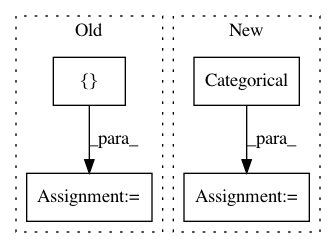

34e7e918bd4fc09f643e8bb448e875a9bcb7e841,experiment.py,,,#,4
Before Change
from linearmodels.tests.panel._utility import generate_data
data = generate_data(0.20, "pandas")
for model in [BetweenOLS, PanelOLS, FirstDifferenceOLS, PooledOLS]:
formula = "y ~ 1 + x0 + x1 + x2 + x3 + x4"
if model is FirstDifferenceOLS:
formula = "y ~ x0 + x1 + x2 + x3 + x4"
joined = data.x
joined["y"] = data.y
mod = model.from_formula(formula, joined)
res = mod.fit()
print(res)
After Change
import numpy as np
y = np.arange(12.0)[:,None]
import pandas as pd
entities = pd.Categorical(pd.Series(["a"]*6+["b"]*6))
dummies = pd.get_dummies(entities)
w = np.random.chisquare(5, (12,1)) / 5
w = w/w.mean()
root_w = np.sqrt(w)
wd = root_w * dummies.values
In pattern: SUPERPATTERN
Frequency: 3
Non-data size: 4
Instances
Project Name: bashtage/linearmodels
Commit Name: 34e7e918bd4fc09f643e8bb448e875a9bcb7e841
Time: 2017-03-29
Author: kevin.k.sheppard@gmail.com
File Name: experiment.py
Class Name:
Method Name:
Project Name: pandas-dev/pandas
Commit Name: 3cb6ee8f93b805d0cf8f7896b455e57632de9840
Time: 2020-11-12
Author: jbrockmendel@gmail.com
File Name: pandas/tests/series/test_dtypes.py
Class Name: TestSeriesDtypes
Method Name: test_astype_categorical_to_other
Project Name: biolab/orange3
Commit Name: 9fdb4c931fc4bb3572891ffa569ec21ffe16911e
Time: 2018-09-10
Author: ales.erjavec@fri.uni-lj.si
File Name: Orange/widgets/data/tests/test_oweditdomain.py
Class Name: TestEditors
Method Name: test_discrete_editor